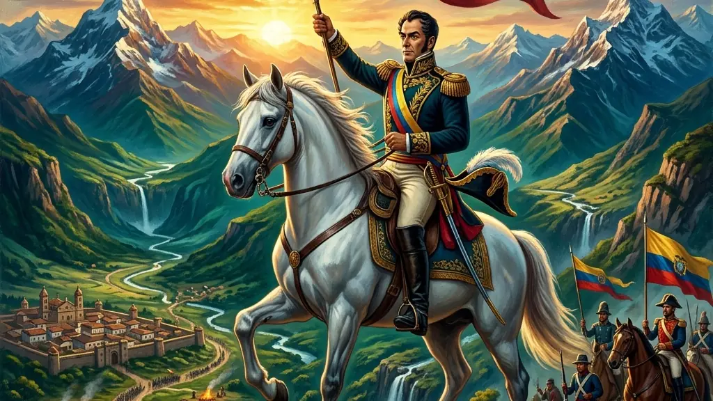

Capítulo 01
1. Criollos vs Chapetones: A Briga pelo Poder
A sociedade colonial espanhola era uma pirâmide de castas. Os Chapetones mandavam em tudo; os Criollos, embora ricos, eram cidadãos de segunda classe. Quando Napoleão prendeu o Rei da Espanha, os Criollos formaram as 'Juntas Governativas', alegando que governavam em nome do rei, mas na verdade estavam treinando para a independência. Foi a revolta dos filhos contra os pais pela herança da terra americana.

Capítulo 02
2. Simón Bolívar: O Sonho de uma Nação Gigante
Bolívar era o 'Libertador'. Ele sonhava com a Grã-Colômbia, uma nação que unia Venezuela, Colômbia e Equador. Seu objetivo final era o Pan-americanismo: uma América Latina unida e forte para enfrentar os EUA e a Europa. Mas seu sonho esbarrou no ego dos generais locais e na geografia difícil do continente. Bolívar morreu triste, dizendo que 'tinha arado no mar', vendo sua grande obra se despedaçar em pequenos países.
Capítulo 03
3. San Martín e o Exército dos Andes
San Martín foi um estrategista genial. Ele atravessou a Cordilheira dos Andes com milhares de soldados para libertar o Chile e o Peru do domínio espanhol. Diferente de Bolívar, ele era mais conservador e temia que a democracia republicana gerasse o caos. San Martín abandonou a cena política após o encontro de Guayaquil com Bolívar, deixando o caminho livre para o republicano venezuelano concluir a libertação do continente.
Capítulo 04
4. Caudilhismo: O Coronelismo Espanhol
Com a saída dos espanhóis, o vácuo de poder foi preenchido pelos Caudilhos. Eram chefes militares regionais que mandavam em suas províncias com violência e carisma pessoal. O caudilhismo impediu a criação de leis fortes e democráticas, gerando décadas de guerras civis e instabilidade política no México, Argentina e em toda a América Central. O caudilho era o 'Pai' e o 'Carrasco' da sua região.
Capítulo 05
5. Brasil vs América Espanhola: O Grande Diferencial
O Brasil manteve um Imperador e continuou sendo um país só. A América Espanhola seguiu o caminho da República e se dividiu em 18 nações. Por que? No Brasil, a elite tinha medo de que uma revolução popular acabasse com a escravidão (Haitianismo). Na América Espanhola, o ódio entre as regiões e a falta de uma capital herdeira forte como o Rio de Janeiro facilitaram a fragmentação que vemos hoje no mapa da América Latina.
A independência da América Espanhola foi um processo profundamente marcado pelas desigualdades estruturais da sociedade colonial e pelo impacto das Guerras Napoleônicas na Europa. Segundo o historiador Tulio Halperín Donghi, a elite Criolla não buscava uma revolução social, mas sim a eliminação do monopólio político e comercial exercido pela metrópole e pelos Chapetones. A ruptura com Madri foi, na verdade, uma forma de conservação do poder da aristocracia agrária e mineradora local.
As campanhas militares foram lideradas por figuras icônicas como Simón Bolívar, ao norte, e José de San Martín, ao sul. Bolívar defendia a tese do pan-americanismo, imaginando uma grande confederação sul-americana capaz de resistir ao imperialismo europeu e norte-americano. No entanto, o Congresso do Panamá (1826) fracassou, e o sonho bolivariano ruiu diante dos particularismos regionais, da geografia hostil e, principalmente, do surgimento do caudilhismo — chefes militares locais que monopolizaram o poder com o vácuo deixado pela Coroa espanhola.
Para o Enem, a chave para compreender este assunto reside na comparação com a formação do Império do Brasil. Enquanto o Brasil adotou um modelo monárquico que, ancorado na escravidão, garantiu a unidade territorial para conter revoltas populares de contornos raciais e sociais (como o medo da 'Haitianização'), a América Hispânica fragmentou-se em múltiplas repúblicas governadas por ditaduras caudilhescas, perpetuando o colonialismo interno contra indígenas e negros africanos.
Fonte: HALPERÍN DONGHI, Tulio. História Contemporânea da América Latina. São Paulo: Paz e Terra, 2005.
Atividades interativas
Questões para fixar
A elite colonial conhecida como 'Criollos', na América Espanhola do século XIX, liderou os processos de independência visando principalmente:
O projeto político de Simón Bolívar, conhecido como 'Pan-americanismo', defendia qual tese fundamental para o continente?
Qual foi o evento que desencadeou a crise do sistema colonial e influenciou a independência da América Espanhola?
Qual foi a principal diferença entre as correntes de libertação lideradas por Simón Bolívar e José de San Martín?
Qual foi o resultado da fragmentação da América Espanhola após a independência?